The following table shows diagrams of identity, the booleans, some standard combinators, some Church numerals, the predecessor function on Church numerals, and Omega.
| term | definition | diagram | alternative |
| I | λx.x | ||
| K/true | λx.λy.x | | |
| false | λx.λy.y | ||
| S | λx.λy.λz.(x z)(y z) | 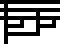 | 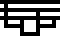 |
| Y | λf.(λx.x x)(λx.f(x x)) | 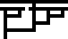 | 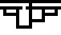 |
| 2 | λf.λx.f(f x) | ||
| 3 | λf.λx.f(f(f x)) | ||
| 4 | λf.λx.f(f(f(f x))) | ||
| pred | λn.λf.λx.n(λg.λh.h(g f))(λu.x)(λu.u) | |
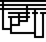 |
| fac | λn λf.n(λf.λn.n(f(λf.λx.n f(f x))))(λx.f)(λx.x) | 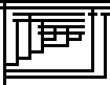 | 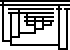 |
| fib | λn λf.n(λc.λa.λb.c b(λx.a (b x)))(λx.λy.x)(λx.x)f | 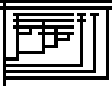 | 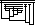 |
| Ω | (λx.x x)(λx.x x) |
And here, on a larger scale, is a prime number sieve (alternative style):

which reduces to an infinite list of booleans that starts out as
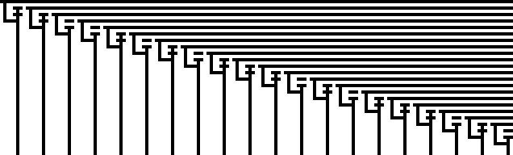
The size of the binary encoding of a term is closely related to the graphical complexity: it is exactly twice the number of lines plus the number of (4-way) intersections.
| initial term | |
| show application of abstraction | 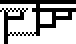 |
| show bound variables and argument | 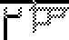 |
| expand function body | |
| to make room for substitution | 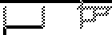 |
| substitute argument for variables | 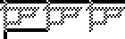 |
| final term |
In his Master thesis, Viktor Massalõgin discusses 4 existing graphical notations before introducing his own "bubble" notation. Figure 3 on page 10 shows 4 depictions of the fixpoint combinator (which differs from Y above in one beta reduction), while the bubble form is in Figure 5 on page 13.
%!PS-Adobe-2.0 EPSF-2.0
%%BoundingBox:0 0 118 110
/m{moveto}def/l{lineto}def/c{concat 6 m 0 6 l 7 8 m 0 8 l l l 3 6 l 2 6 m 7 6 l
3 4 m 6 4 l 6 6 l stroke}def 3 0 0 0 1[-8 4 0 8 60 9]c 3 2 0 2 2[-1 1 0 1 0 0]c